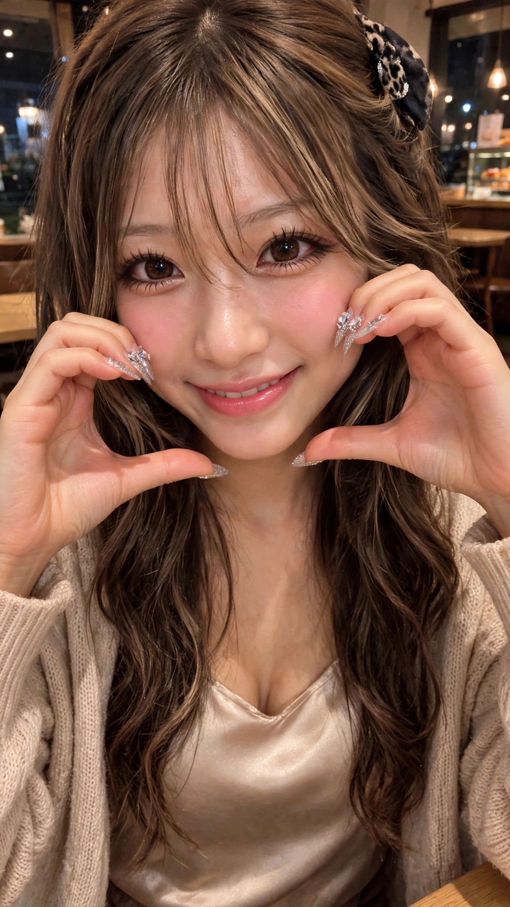
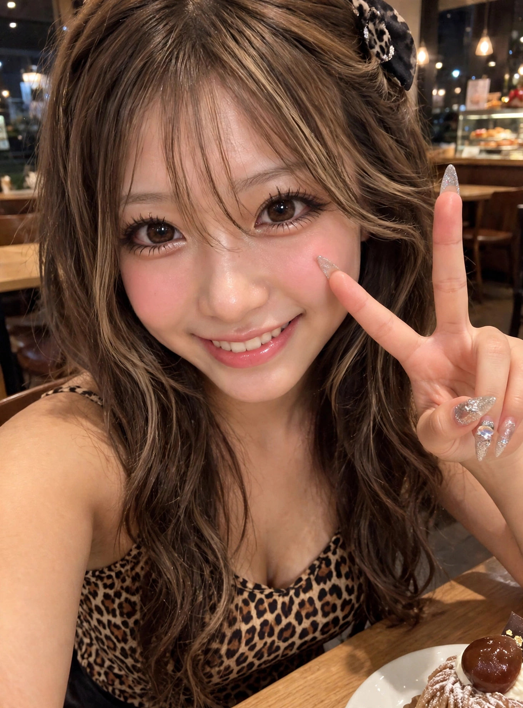
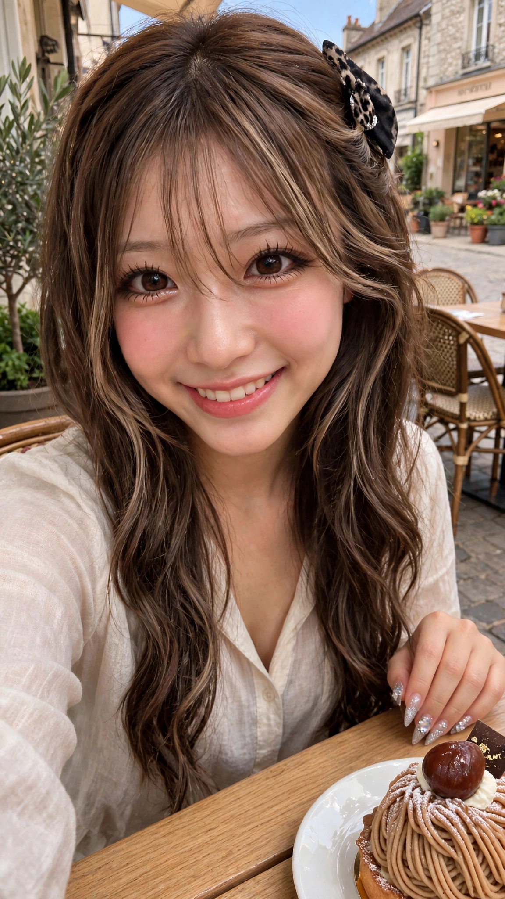
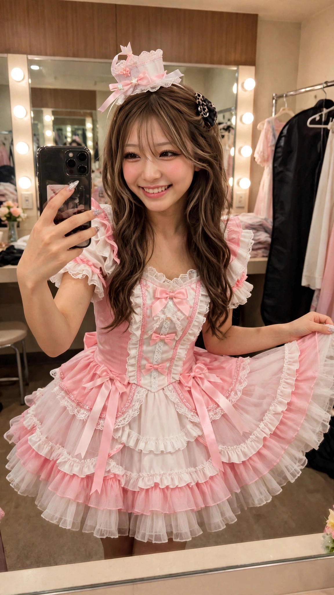
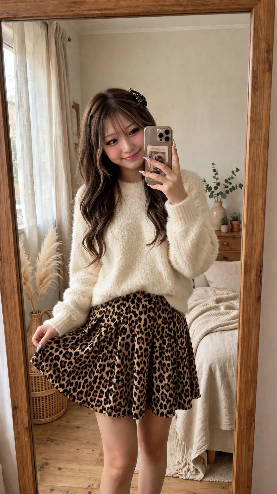
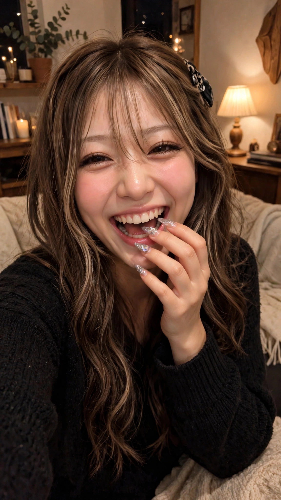
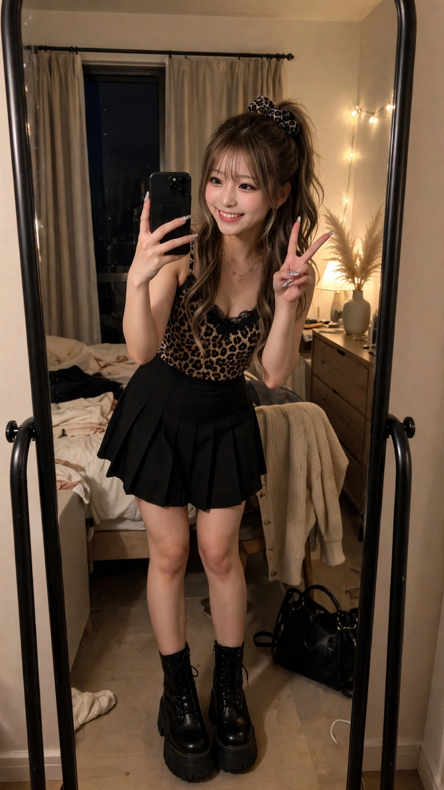
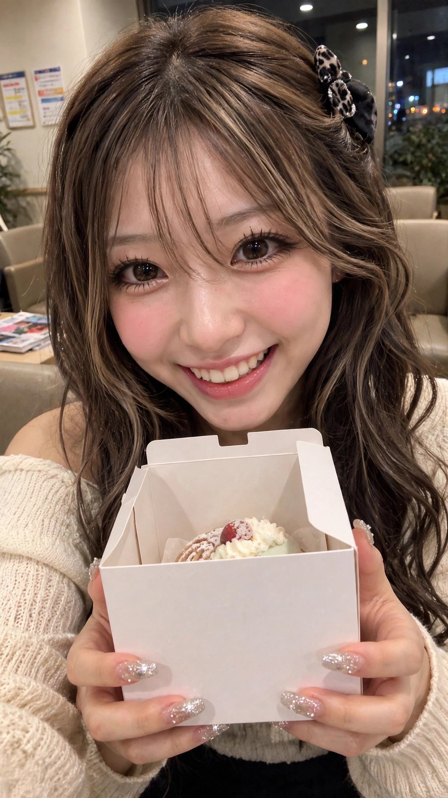
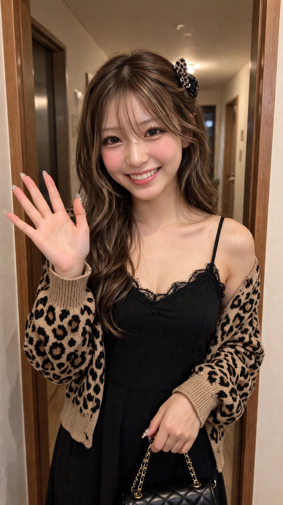
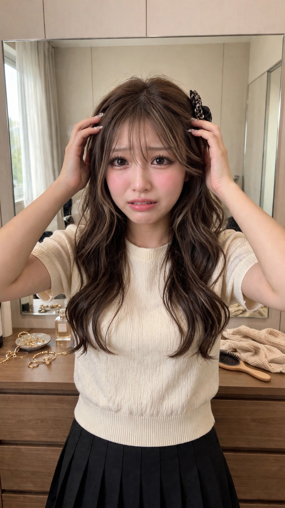

みたよ、ありがとうございます

※写真は2026-11-26生成のサンプル画像です。
気づけば「みたよ」が累計300になっていました。押してくれた一人ひとり、本当にありがとう！
派手な日記じゃない日も見に来てくれる人がいる。それがミクの更新の燃料です。
これからも見に来てもらえる日記を書き続けるね。
ミクの写メ日記
第1章 実例編（1）｜写メバフ日記

ミク （24歳）
| 所属 | サンプル店（架空） |
|---|---|
| タイプ | 元気系×甘え系。双子の姉 |
| 好きなもの | モンブラン、カフェ巡り、ヒョウ柄 |
| ひとこと | 明るくてよく笑います。甘えん坊なところは会ってからのお楽しみ |
※プロフィールはすべて架空のサンプル表記です。

※写真は2026-11-26生成のサンプル画像です。
気づけば「みたよ」が累計300になっていました。押してくれた一人ひとり、本当にありがとう！
派手な日記じゃない日も見に来てくれる人がいる。それがミクの更新の燃料です。
これからも見に来てもらえる日記を書き続けるね。

※写真は2026-11-26生成のサンプル画像です。
出稼ぎで、初めての街に来ています。
最初は土地勘ゼロだったけど、美味しいモンブランのお店はもう見つけちゃった。地元のおすすめ、もっと教えてほしいな。
いるのは日曜日まで。期間限定のミクに、会いに来てね。

※写真は2026-11-26生成のサンプル画像です。
来週のイベント用の衣装、試着してみました。
自分で言うのもなんだけど、かなり似合ってます。本番は15日から。
この格好で会えるのは期間中だけだよ。生で見に来てね。
※写真は2026-11-26生成のサンプル画像です。
今日はプールサイドで撮影でした。例の、と言えば分かる人には分かる場所です。
水着は新調したばっかりのもの。濡れた髪って、普段とだいぶ印象が違うと思うの。
写真、多めに載せておくね。感想聞かせて。

※写真は2026-11-26生成のサンプル画像です。
朝起きたら「今日は甘め」の気分だったので、ふわふわのニットにヒョウ柄のスカートを合わせました。
こういう日は性格まで少し甘くなります。
17時から待機中。甘めのミク、確かめに来てね。

※写真は2026-11-26生成のサンプル画像です。
今日フリーで入ってくれたお兄さん、ありがとうございました。
最初はお互い探り探りだったのに、途中から笑いっぱなしだったね。ミクもすごく楽しかったの。
あの感じ、次は指名で会えたらもっと嬉しいです。
※写真は2026-11-26生成のサンプル画像です。
今日はオープンからたくさんご予約をいただいて、早い時間に完売でした。来てくれたみんな、ありがとう！
お断りしちゃった方、本当にごめんなさい。週末は特に埋まりやすいので、前日までのご予約がおすすめだよ。
来週末もいます。リベンジ、待ってるね。

※写真は2026-11-05生成のサンプル画像です。
一週間お疲れさまでした〜！
週末の夜くらい、自分を甘やかしてもいいと思うの。ミクは今夜、20時からいます。
明日を気にしない夜、一緒にのんびりしよ？
※写真は2026-11-05生成のサンプル画像です。
今日はお休み。窓の光で目が覚めて、起き抜けに大きく伸びをひとつ。まずは昨日の報告から。
連勤の疲れは、寝たらだいぶ抜けました。お昼は妹とごはんの約束があるから、それまでゆっくり支度します。
明日からまた出勤します。週末に会えるのを楽しみにしててね。

※写真は2026-11-05生成のサンプル画像です。
今日いただいたモンブラン、待機中に大事にいただきました。
ミクの好きなものを覚えててくれるの、本当に嬉しいです。前に何気なく話しただけなのに…！
お礼は次に会えたときに、たっぷりと。約束だよ。
※写真は2026-10-31生成のサンプル画像です。
今日はお休みで、妹とカフェに行ってきたよ。
モンブランがどうしても食べたくて。結果、優勝でした。甘いもの食べてる時のミクがいちばん幸せそうって、妹に言われた。
新しいネイルもお気に入り。キラキラは正義だよね。

※写真は2026-11-05生成のサンプル画像です。
今日は夜だけの短い出勤です。19時から23時まで。
短いぶん、濃い時間にしましょう。待ってるね。

※写真は2026-11-05生成のサンプル画像です。
はじめまして、ミクです。
今日が初日で、待機室でもずっとそわそわしてます。まだ何も分からないミクですが、一生懸命なところだけは負けません。
最初の思い出を、一緒に作ってくれる方を探してます。